มูลนิธิทิสโก้ เพื่อการกุศล
TISCO FOUNDATION
คู่มือสำหรับ
สถานศึกษา
เพื่อใช้ชี้แจงให้นักเรียนทุน
TISCO Foundationทุนการศึกษา
เกณฑ์การพิจารณา
- ขาดแคลนทุนทรัพย์
- มีความประพฤติดี มีจริยธรรม
- กำลังศึกษาอยู่ตั้งแต่ระดับชั้นประถมศึกษาปีที่ 5
จนถึงระดับปริญญาตรี - เกรดเฉลี่ยไม่ต่ำกว่า 1.50
- ไม่กู้ กยศ. หรือ กรอ.
- ไม่ได้รับทุนการศึกษาต่อเนื่องจากหน่วยงานใดๆ
- ระดับปริญญาตรี ต้องไม่เรียนมหาวิทยาลัยเอกชน
และไม่เรียนภาคพิเศษ ภาคสมทบ
ทุนการศึกษาต่อปี แต่ละระดับดังนี้
การสมัครขอทุนการศึกษา
แบบฟอร์มขอทุนใหม่
สำหรับผู้ที่ไม่เคยยื่นสมัครขอรับทุนของมูลนิธิฯ มาก่อน
หรือเป็นผู้ที่เคยได้รับทุนจากมูลนิธิฯ แล้วในปีก่อน
แต่ไม่ได้รับทุนในปีการศึกษาล่าสุดนี้
แบบฟอร์มขอทุนต่อเนื่อง
สำหรับผู้ขอทุนที่ได้รับทุนของมูลนิธิฯ ในปีการศึกษาล่าสุดนี้
และประสงค์จะขอรับทุนต่อเนื่องในปีการศึกษาต่อไป
ต้องยื่นแบบฟอร์มการขอรับทุนต่อเนื่องมายังมูลนิธิฯ ทุกปี
โดยผู้ขอรับทุนจะต้องส่งแบบฟอร์มการขอรับทุนต่อเนื่องให้มูลนิธิทุกปี
และต้องปฏิบัติตามระเบียบการใช้จ่ายเงินทุนการศึกษา จึงจะได้รับทุนการศึกษาต่อเนื่อง
เกณฑ์การพิจารณาหลัก
ทุนใหม่
- สถานภาพครอบครัว
- ฐานะทางเศรษฐกิจของครอบครัว
- สภาพที่อยู่อาศัย
- สภาพปัญหาความเดือดร้อน
ทุนต่อเนื่อง
เอกสารการขอรับทุนการศึกษา
ทุนใหม่“เขียนเล่าประวัติและสภาพความเป็นอยู่”ยกเว้นระดับประถมศึกษาปีที่ 5↗ แบบฟอร์มรับรองสถานะการกู้ยืม กยศ./กรอ.
และการได้รับทุนการศึกษาอื่นสำหรับระดับมัธยมศึกษาตอนปลาย อาชีวศึกษา และปริญญาตรีเท่านั้น↗ จดหมายรับรองจากอาจารย์ที่ปรึกษาเฉพาะระดับปริญญาตรีเท่านั้น↗
เอกสารการขอรับทุนการศึกษา
ทุนต่อเนื่องและการได้รับทุนการศึกษาอื่นสำหรับระดับมัธยมศึกษาตอนปลาย อาชีวศึกษา และปริญญาตรีเท่านั้น↗
ที่เข้าบัญชีจนถึงรายการปัจจุบัน
ข้อควรรู้ก่อนสมัครทุน
กยศ. กรอ. อยู่
ในปัจจุบัน
กยศ. กรอ. อยู่
แต่ปีการศึกษาหน้าไม่กู้ต่อ
กยศ. กรอ.
ในปีการศึกษาหน้า
วิธีการสมัครขอทุนการศึกษา
เลือกวิธีใดวิธีหนึ่งเปิดรับสมัคร ตั้งแต่ 1 พฤศจิกายน – 31 มกราคม ของทุกปี พร้อมกันทั้งทุนใหม่และทุนต่อเนื่อง
สมัครผ่านทางสถานศึกษาที่กำลังศึกษาอยู่ปัจจุบันเท่านั้น
ระบบออนไลน์
scholarship.tiscofoundation.orgเขียนแบบฟอร์มส่งทางไปรษณีย์
ดาวน์โหลด tiscofoundation.orgนักเรียนเรียนต่อสถานศึกษาเดิม
สมัครขอรับทุนทุนใหม่ทุนต่อเนื่อง
มูลนิธิ
พิจารณาใบสมัคร
ประกาศรายชื่อ
ผู้ได้รับทุนรอบแรก
มูลนิธิส่ง
ตั๋วแลกเงิน
ไปที่สถานศึกษา
นักเรียนที่จะย้ายสถานศึกษา
สมัครขอรับทุนทุนใหม่ทุนต่อเนื่อง
กรอกในใบสมัครว่าปีการศึกษาหน้า
จะย้ายสถานศึกษา
ส่งหลักฐาน
ยืนยันการย้าย
ให้มูลนิธิ
มูลนิธิพิจารณา
ทุนรอบรอฟังผล
ยืนยันการย้ายแล้ว
เท่านั้น
ประกาศรายชื่อ
ผู้ได้รับทุน
รอบรอฟังผล
มูลนิธิส่ง
ตั๋วแลกเงิน
ไปที่สถานศึกษา
กรณีย้ายสถานศึกษา
- ใบเสร็จการจ่ายค่าเทอมของสถานศึกษาใหม่
- บัตรประจำตัวนักเรียน/นักศึกษาของสถานศึกษาใหม่
- หนังสือรับรองสถานภาพการเป็นนักเรียน/นักศึกษาของสถานศึกษาใหม่
ให้ส่งหลักฐาน
ส่งหลักฐานย้าย
รอบแรก (1)
ปวช.3 ปวส.2
ส่งหลักฐาน
รอบรอฟังผล (2)
ประกาศรายชื่อผู้ได้รับทุน
รอบแรก
เรียนต่อสถานศึกษาเดิม
ที่ส่งหลักฐานยืนยันการย้ายสถานศึกษาใหม่
ภายในวันที่ 15 พฤษภาคม
รอบรอฟังผล
ที่ส่งหลักฐานยืนยันการย้ายสถานศึกษาใหม่
ภายในวันที่ 31 กรกฎาคม
หลังจากประกาศรายชื่อ
ได้ทุนแล้ว ทำอะไรต่อ?เช็กรายชื่อให้ชัวร์
ชื่อ-สกุล สะกดถูกไหม
เปลี่ยนชื่อ-สกุลหรือเปล่า
สถานศึกษาตรงกับที่เรียนอยู่ปัจจุบันไหม
ข้อมูลผิด แจ้งมูลนิธิทันที!
รอฟังวันส่งเงินทุน
มูลนิธิจะแจ้งวันส่ง
ตั๋วแลกเงิน / แคชเชียร์เช็ค
ที่เพจ Facebook TISCO Foundation
ยังไม่ได้รับ?
ถ้ายังไม่ได้รับ
ตั๋วแลกเงิน / แคชเชียร์เช็ค
เช็กที่ธุรการโรงเรียนก่อน
ถ้าไม่พบ ติดต่อมูลนิธิทันที
ได้รับแล้ว รีบขึ้นเงิน!
ตั๋วแลกเงิน / แคชเชียร์เช็ค
มีอายุ 3 เดือน นับจากวันที่ที่ระบุไว้
ที่หน้าตั๋วแลกเงิน / แคชเชียร์เช็ค
ใช้เงินแล้ว จดไว้ด้วย
ลงบันทึกรายการค่าใช้จ่าย
เก็บใบเสร็จไว้แนบขอทุนต่อเนื่อง
ในปีถัดไป
สมุดบัญชีธนาคาร
เก็บไว้ที่คุณครูผู้ดูแลทุน
ข้อปฏิบัติและข้อห้ามของทุนต่อเนื่อง
อ่านให้ครบ ห้ามพลาด!ของนักเรียน/นักศึกษาเท่านั้น
และใช้เฉพาะที่จำเป็น
ใน “แบบฟอร์มรายการใช้จ่าย”
ผู้รับทุน ผู้ปกครอง และครูผู้ดูแลทุน
ต้องเซ็นรับทราบทุกรายการ
ต่อรายการหรือต่อใบเสร็จ
ต้องแนบใบเสร็จที่น่าเชื่อถือ
แล้วนำไปใช้จ่ายภายหลัง
ควรเบิกเมื่อจำเป็นต้องใช้เท่านั้น
หรือเก็บไว้ที่ผู้ปกครอง
มาฝากหรือถอนร่วมกับ
บัญชีเงินทุนการศึกษา
รีบนำไปฝากเข้าบัญชีทันที
มีอายุเพียง 3 เดือน นับจากวันที่
ที่ระบุบนตั๋วแลกเงิน / แคชเชียร์เช็คหากเกินกำหนด
ถือว่าสละสิทธิ์รับทุนในปีนั้น
การใช้จ่ายเงินทุนการศึกษา
แบบฟอร์มรายการใช้จ่ายเงิน
นักเรียน ผู้ปกครอง ครูผู้ดูแลทุน เซ็นทุกรายการ
ตัวอย่างการกรอกแบบฟอร์ม
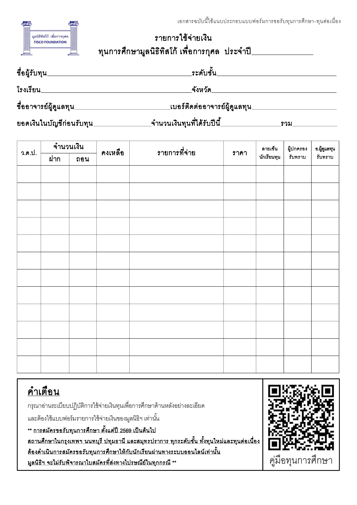
ตัวอย่างการบันทึกรายการ
ชุดนักเรียน 500 บาท
ใช้จ่าย 500 บาทขึ้นไป
ต้องแนบใบเสร็จแนบด้วย!
จากบ้านไป-กลับโรงเรียน
เขียนให้ชัด วันที่ จำนวนวัน ราคาต่อวันเขียนละเอียด!
ตัวอย่างใบเสร็จที่น่าเชื่อถือ
เช็กให้ครบ 5 จุด!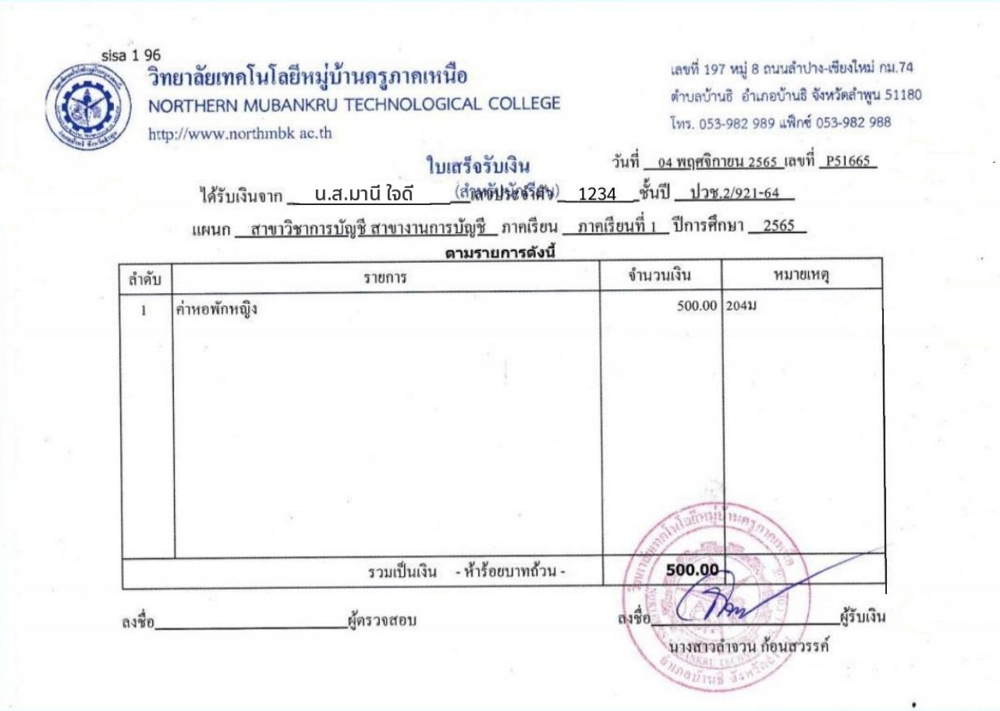
12345ตัวอย่างใบเสร็จที่น่าเชื่อถือ
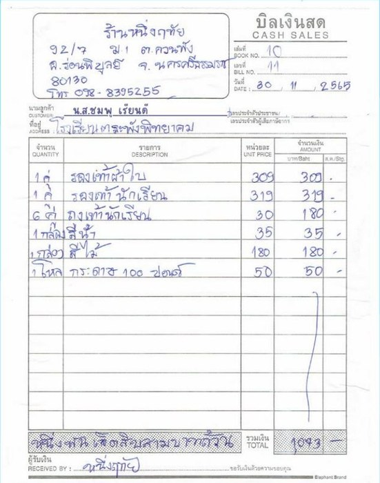
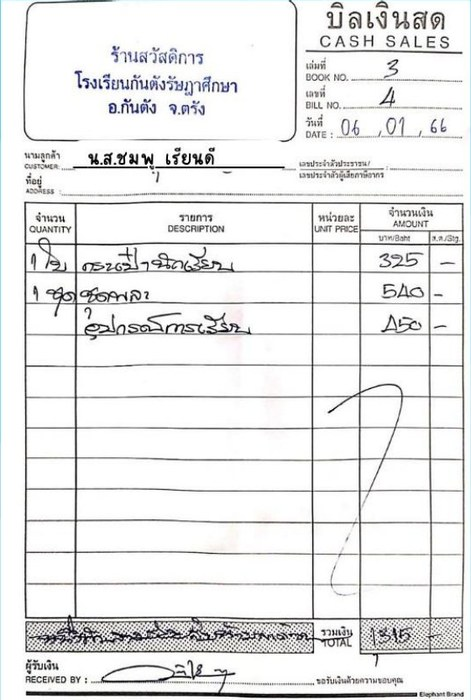
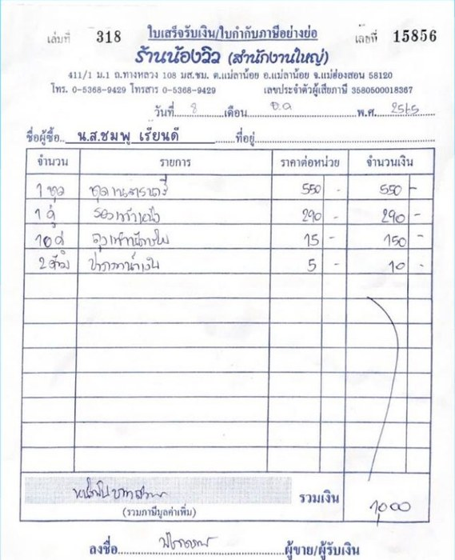
ตัวอย่างใบเสร็จที่ไม่น่าเชื่อถือ
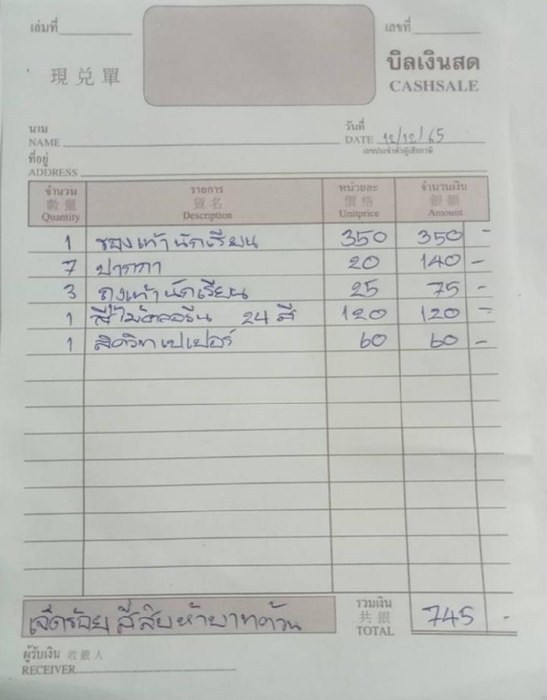
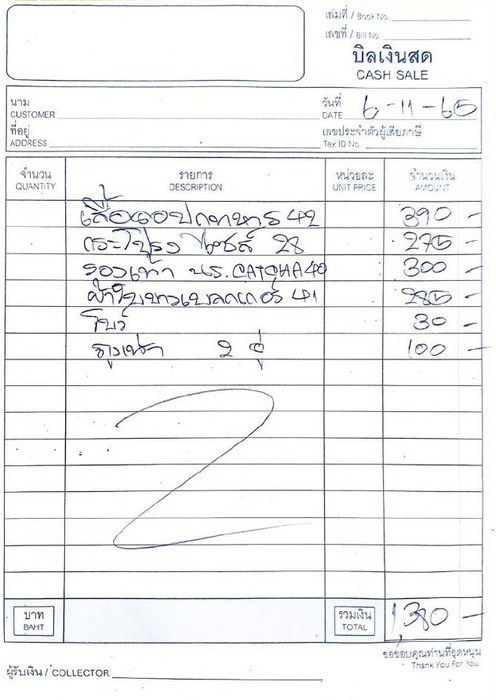
ตัวอย่างใบเสร็จที่ไม่น่าเชื่อถือ
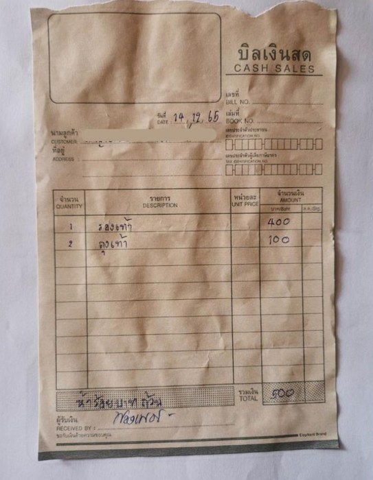
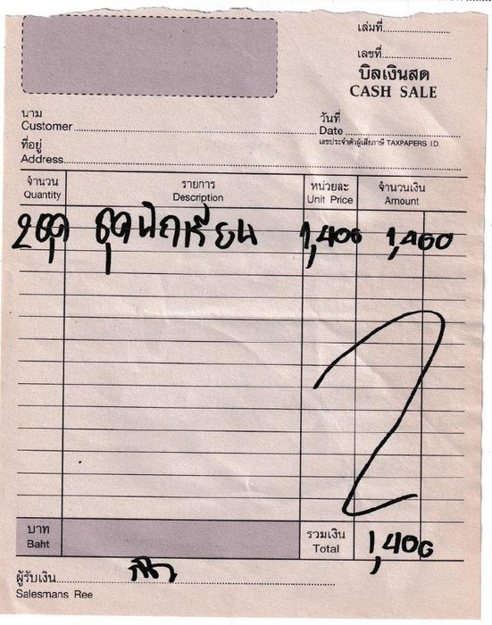
ตัวอย่างหลักฐานใบเสร็จค่าอินเทอร์เน็ต
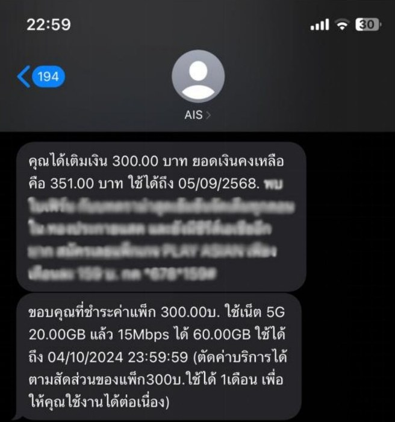
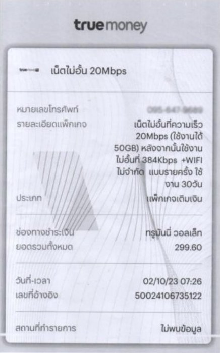
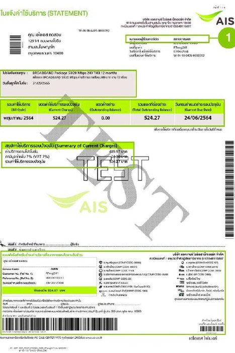